ISSUE 001 — Opening
제목과 사진이 따로 놓인 작은 표지 → 두 목소리의 제목과 넓은 사진 판. 차체를 자르는 모바일 크롭은 검토 후 원본 비율로 복원.


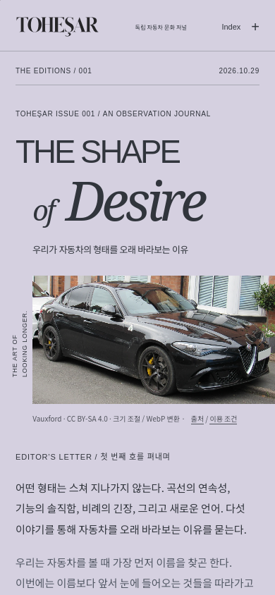
01 — Porsche 911
작은 아치 속 자동차 → 차체와 항구의 수평이 함께 보이는 넓은 곡선 프레임. 번호를 차체 위에서 지면 상단으로 이동.


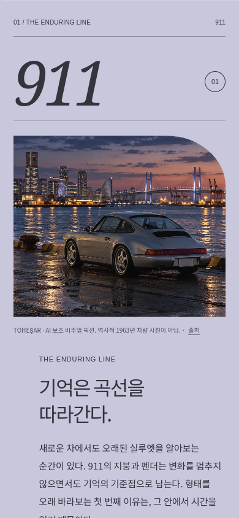
02 — Ferrari F40
피치색과 빨간 사진이 경쟁하던 화면 → 따뜻한 종이색, 수평 사진과 큰 F40 활자. 붉은색은 자동차가 주도.


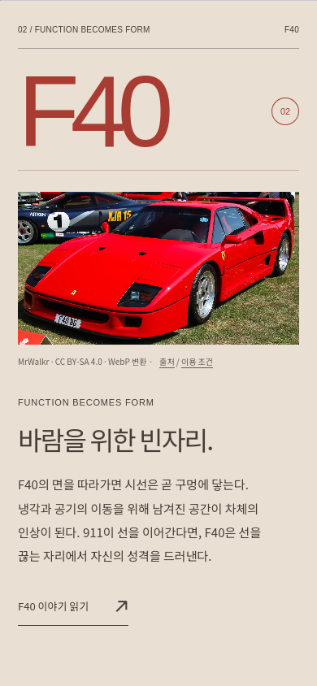
03 — Alfa Romeo Giulia
어두운 배경과 사진을 가르는 세로선 → 세이지색의 측면 관찰판. 보닛·캐빈·어깨의 표시는 사진 밖으로 분리.

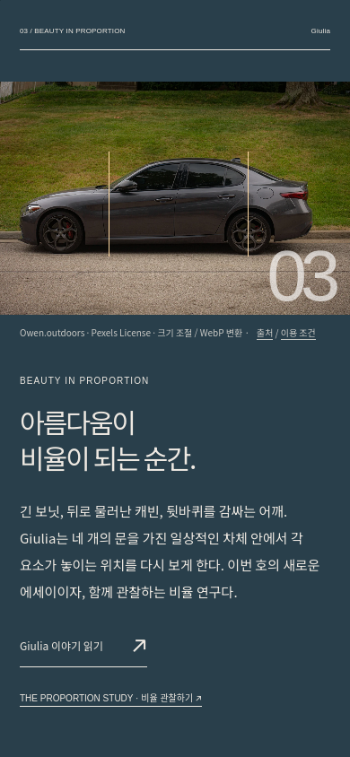

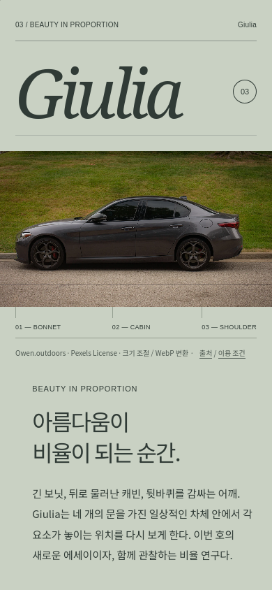
04 — Jaguar Type 01
벽이 차체보다 크게 보이던 세로 크롭 → 기존 공식 측면 사진의 원래 비율. 길고 낮은 GT를 가로로 감상.

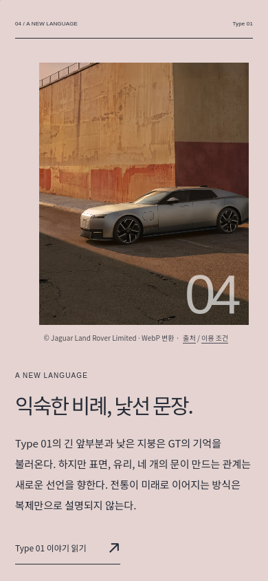

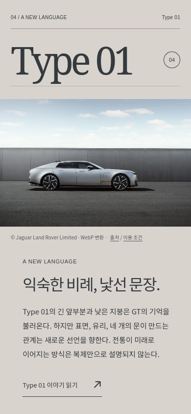
05 — Miniature Atelier
기존 세 대의 구성·색채·회전·그림자는 유지. 앞선 지면과 캡션, 종이색, 읽기 폭만 맞춤.


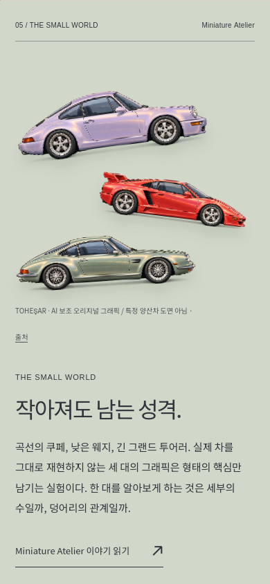
Giulia — Editorial
분리된 산세리프 제목과 전면 사진 → 측면 비례를 중심으로 한 세리프 제목과 사진·관찰 레지스터. 기존 사실·원고·사진 권리 정보 보존.

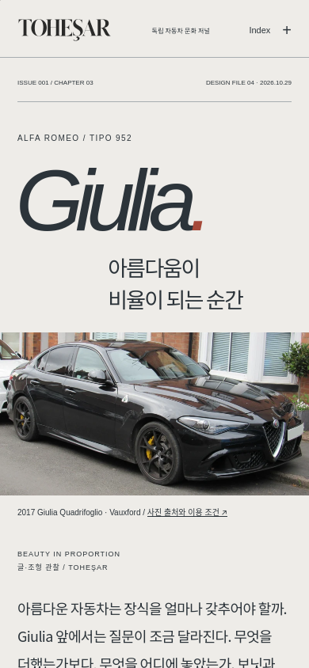

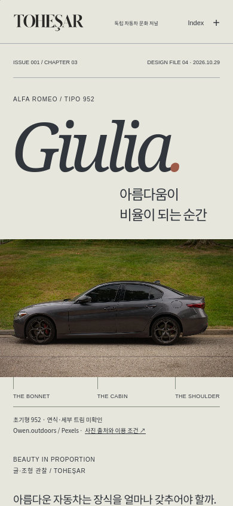
The Proportion Study
차량을 어둡게 가리는 마스크와 굵은 선 → 넓은 사진, 밝은 관찰 종이, 가는 선과 연속 진행 표시. 같은 50% 스크롤 위치.

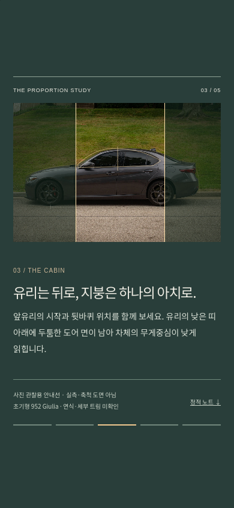

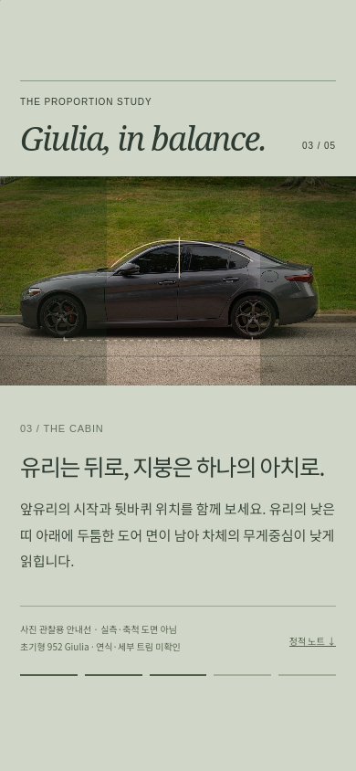
Journal — Frontispiece
규격화된 제목·좁은 사진 → 세리프 마스트와 여백을 가로지르는 911 사진. 기존 뉴스·Atlas·기사 탐색 유지.


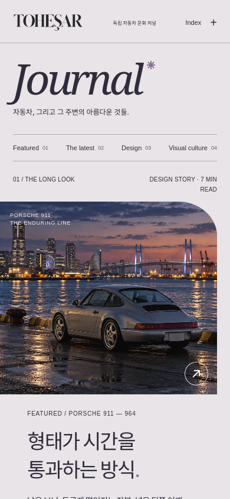
The Editions — Archive
긴 소개 다음에 오는 일반 카드 → 간결한 아카이브 도입과 ISSUE 001의 출판물 표지. 발행된 한 호만 표시.

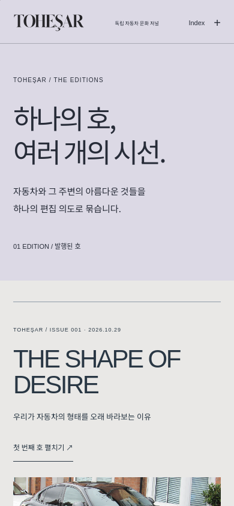

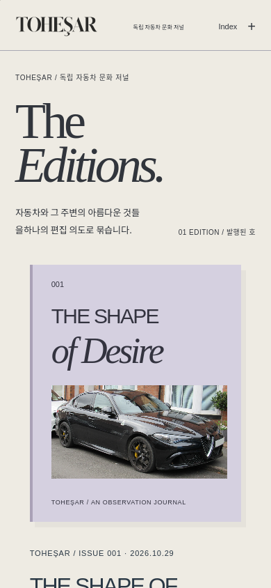
The final page
일반적인 종료 목록 → 앞선 곡선의 여운과 한국어 문장을 중심으로 마무리. 계속 읽는 링크 유지.

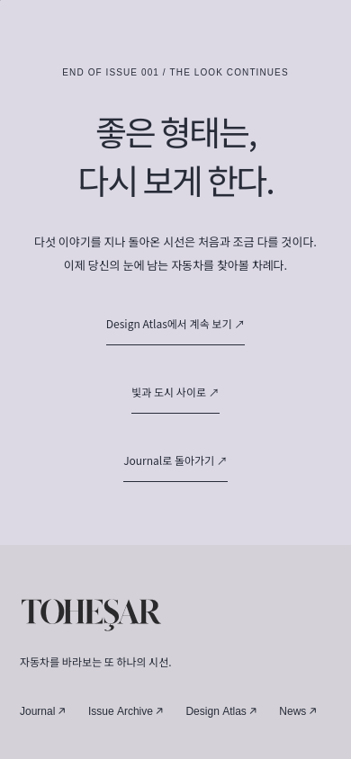

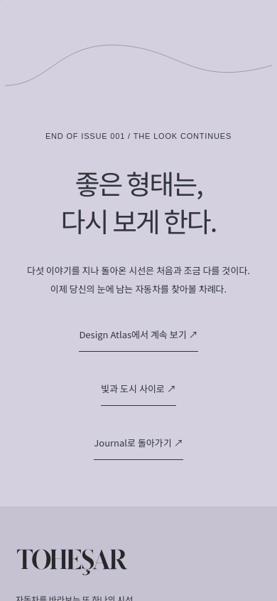
The whole form — Static
제목 없이 이어지던 사진 → 마지막 관찰의 제목과 안내선 없는 원본 전체 프레임. 다섯 정적 노트와 사진 한계 보존.

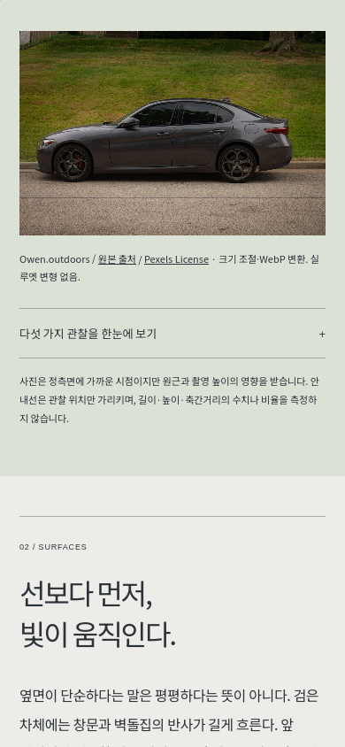

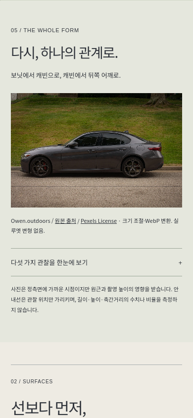